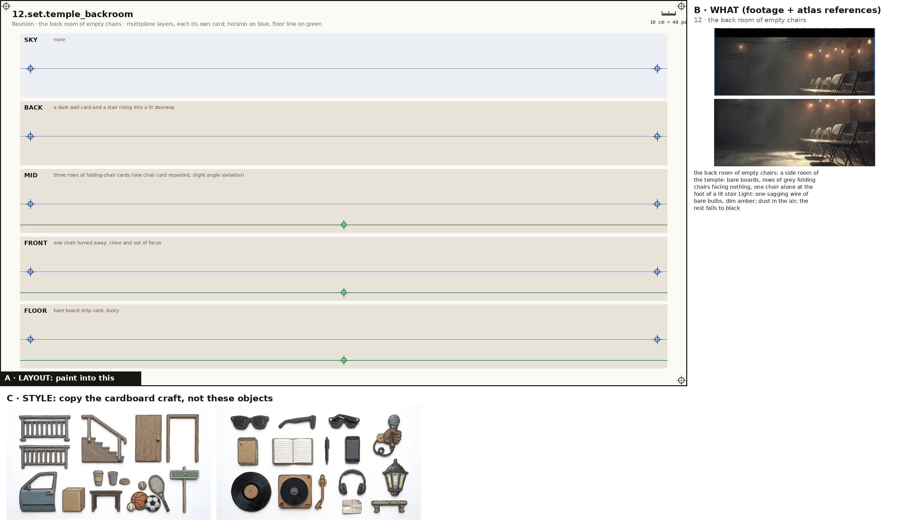
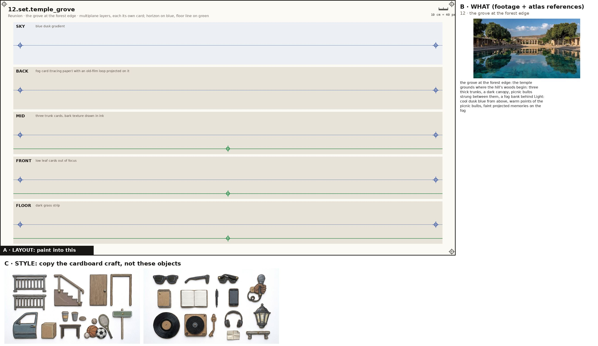
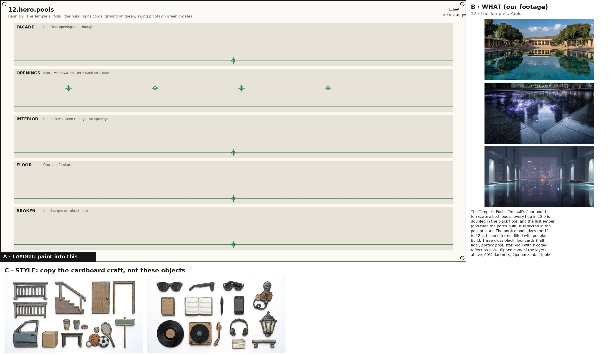

One image + one prompt each. The characters' action sheets are in the cast above; their costume kits are on the character kits page.

Props, every state props
Paint one sheet of cut-out puppet parts for a paper-puppet film, using the attached image. Panel A is the exact layout, panel B is our footage for these props (reference: copy the object, not the photo style), panel C is the style. STYLE (panel C): flat cards cut from corrugated cardboard, gouache with confident ink linework, the flutes faintly showing through the paint, a thin raw kraft-brown cut edge round every card, brass split-pin brads; shot flat-on, even light, no shadows, no perspective. Copy the craft from C, not the clothes in it. WHAT (panel B): the props of the poem 'Reunion', one row each, every state of a prop in its own cell, left to right: the last hourglass, on the shelf: a tall glass hourglass about 40 cm, dark wood ends, sand running from the upper bulb into a cone in the lower, flames standing along the upper rim and smoke leaving upward; it never runs out and its fire only grows (full, unlit, running, small flame, running, full fire, the one still alight, ember lifting off the rim); the hand hourglass (x12): hand-sized hourglass, 18 cm, dark wood ends, the glass smouldering with a small flame at the neck; as it burns out it slumps and its outline goes out run by run (lit, sand running, guttering, outline broken, out, slumped, smoke only); the old snapshot: a faded square snapshot with a white border: the brothers decades younger, mid-run, one holding a football (held up, insert: the old pose, matched by the living restaging); the worn football: worn brown leather American football, white laces (held, tossed (2-frame spin)); the wall screen: large flat black-framed screen on the white wall showing a football game in green and white (game on, goal flash); the phone: black smartphone held up landscape (raised, flash); the white niche shelf: an arched lit niche in the white temple wall with a floating shelf (lit); the porch light: a single bare bulb in a small tin shade over the temple's side porch, wooden steps below, a few string bulbs looping along the eave (off, switching on, on, reflected in the pool). Paint each state as a flat cardboard prop card at the size its cell gives, the same object across its row; a brass brad on the green cross (its pivot); where there is a red cross, that is where a hand grips it. LAYOUT (panel A): paint one card inside each grey ghost, in the same place, size and angle, inside its dashed outline; a brass brad exactly on every green cross; each red cross must fall inside that card's rounded end. NEVER draw a pelvis, hip, shorts or briefs card (the thighs end in a rounded seat that tucks under the hem), a sleeveless vest, lace-up boots, or sunglasses painted onto a head. OUTPUT: only the painted cards on a pure white 2048x1152 sheet laid out as panel A. Leave out panels B and C, the crosses, labels, ruler, dashed lines and ghosts.

the white temple hall set
Paint one sheet of cut-out puppet parts for a paper-puppet film, using the attached image. Panel A is the exact layout, panel B is our footage for this place (reference: copy the place, not the photo style), panel C is the style. STYLE (panel C): flat cards cut from corrugated cardboard, gouache with confident ink linework, the flutes faintly showing through the paint, a thin raw kraft-brown cut edge round every card, brass split-pin brads; shot flat-on, even light, no shadows, no perspective. Copy the craft from C, not the clothes in it. WHAT (panel B): the white temple hall: inside the temple from 11: bone-white walls of arched lit niches, an open colonnade onto the shore and pool, long low dark-wood benches, a wall screen; warm evening light Light: warm sandstone evening light raking through the colonnade from the left; niches self-lit; for ELDERS the whole hall goes to black and drains back from the top. SHEET: the place as five separate flat cardboard layers, one per band, painted to stack front to back in a multiplane rig: SKY: evening sky seen through the colonnade, pale gold to blue; BACK: white wall of arched lit niches; the tall niche with the hourglass shelf at centre; the wall screen to one side; MID: colonnade pillars as a regular row of cards; for ELDERS a black star-flecked drop with elder cut-outs flies in here; FRONT: low dark-wood benches, the ring of friends; FLOOR: pale stone with a mirror strip of pool water at the colonnade edge. Each layer is its own card with a clean cut top edge and transparent gaps where the layer behind shows through; keep the horizon on the blue line and the floor on the green line in every band so they register. LAYOUT (panel A): paint one card inside each grey ghost, in the same place, size and angle, inside its dashed outline; a brass brad exactly on every green cross; each red cross must fall inside that card's rounded end. OUTPUT: only the painted cards on a pure white 2048x1152 sheet laid out as panel A. Leave out panels B and C, the crosses, labels, ruler, dashed lines and ghosts.

the temple's shore terrace at dusk set
Paint one sheet of cut-out puppet parts for a paper-puppet film, using the attached image. Panel A is the exact layout, panel B is our footage for this place (reference: copy the place, not the photo style), panel C is the style. STYLE (panel C): flat cards cut from corrugated cardboard, gouache with confident ink linework, the flutes faintly showing through the paint, a thin raw kraft-brown cut edge round every card, brass split-pin brads; shot flat-on, even light, no shadows, no perspective. Copy the craft from C, not the clothes in it. WHAT (panel B): the temple's shore terrace at dusk: low stone steps and a broad wet terrace on the shoreline below the temple, open sea, hills across the water, a few warm lamps Light: dusk: indigo sky, a last warm band at the horizon, two lamps on the wall; wet floor picks up reflections. SHEET: the place as five separate flat cardboard layers, one per band, painted to stack front to back in a multiplane rig: SKY: indigo dusk with the first stars, a band of Milky Way at the top; BACK: hills and a lit far shore across the water; MID: calm sea with a reflection strip; hanging-cloth line lifting in the wind at one side; FRONT: stone steps with two wall lamps at left; FLOOR: wet stone slabs, reflective. Each layer is its own card with a clean cut top edge and transparent gaps where the layer behind shows through; keep the horizon on the blue line and the floor on the green line in every band so they register. LAYOUT (panel A): paint one card inside each grey ghost, in the same place, size and angle, inside its dashed outline; a brass brad exactly on every green cross; each red cross must fall inside that card's rounded end. OUTPUT: only the painted cards on a pure white 2048x1152 sheet laid out as panel A. Leave out panels B and C, the crosses, labels, ruler, dashed lines and ghosts.

the back room of empty chairs set
Paint one sheet of cut-out puppet parts for a paper-puppet film, using the attached image. Panel A is the exact layout, panel B is our footage for this place (reference: copy the place, not the photo style), panel C is the style. STYLE (panel C): flat cards cut from corrugated cardboard, gouache with confident ink linework, the flutes faintly showing through the paint, a thin raw kraft-brown cut edge round every card, brass split-pin brads; shot flat-on, even light, no shadows, no perspective. Copy the craft from C, not the clothes in it. WHAT (panel B): the back room of empty chairs: a side room of the temple: bare boards, rows of grey folding chairs facing nothing, one chair alone at the foot of a lit stair Light: one sagging wire of bare bulbs, dim amber; dust in the air; the rest falls to black. SHEET: the place as five separate flat cardboard layers, one per band, painted to stack front to back in a multiplane rig: SKY: none; BACK: a dark wall card and a stair rising into a lit doorway; MID: three rows of folding-chair cards (one chair card repeated, slight angle variation); FRONT: one chair turned away, close and out of focus; FLOOR: bare board strip card, dusty. Each layer is its own card with a clean cut top edge and transparent gaps where the layer behind shows through; keep the horizon on the blue line and the floor on the green line in every band so they register. LAYOUT (panel A): paint one card inside each grey ghost, in the same place, size and angle, inside its dashed outline; a brass brad exactly on every green cross; each red cross must fall inside that card's rounded end. OUTPUT: only the painted cards on a pure white 2048x1152 sheet laid out as panel A. Leave out panels B and C, the crosses, labels, ruler, dashed lines and ghosts.

the grove at the forest edge set
Paint one sheet of cut-out puppet parts for a paper-puppet film, using the attached image. Panel A is the exact layout, panel B is our footage for this place (reference: copy the place, not the photo style), panel C is the style. STYLE (panel C): flat cards cut from corrugated cardboard, gouache with confident ink linework, the flutes faintly showing through the paint, a thin raw kraft-brown cut edge round every card, brass split-pin brads; shot flat-on, even light, no shadows, no perspective. Copy the craft from C, not the clothes in it. WHAT (panel B): the grove at the forest edge: the temple grounds where the hill's woods begin: three thick trunks, a dark canopy, picnic bulbs strung between them, a fog bank behind Light: cool dusk blue from above, warm points of the picnic bulbs, faint projected memories on the fog. SHEET: the place as five separate flat cardboard layers, one per band, painted to stack front to back in a multiplane rig: SKY: blue dusk gradient; BACK: fog card (tracing paper) with an old-film loop projected on it; MID: three trunk cards, bark texture drawn in ink; FRONT: low leaf cards out of focus; FLOOR: dark grass strip. Each layer is its own card with a clean cut top edge and transparent gaps where the layer behind shows through; keep the horizon on the blue line and the floor on the green line in every band so they register. LAYOUT (panel A): paint one card inside each grey ghost, in the same place, size and angle, inside its dashed outline; a brass brad exactly on every green cross; each red cross must fall inside that card's rounded end. OUTPUT: only the painted cards on a pure white 2048x1152 sheet laid out as panel A. Leave out panels B and C, the crosses, labels, ruler, dashed lines and ghosts.

The Temple's Pools hero
Paint one sheet of cut-out puppet parts for a paper-puppet film, using the attached image. Panel A is the exact layout, panel B is the atlas reference for this building (copy the building, not the photo style), panel C is the style. STYLE (panel C): flat cards cut from corrugated cardboard, gouache with confident ink linework, the flutes faintly showing through the paint, a thin raw kraft-brown cut edge round every card, brass split-pin brads; shot flat-on, even light, no shadows, no perspective. Copy the craft from C, not the clothes in it. WHAT (panel B): The Temple's Pools: The hall's floor and the terrace are both pools: every hug in 12.0 is doubled in the black floor, and the last ember (and then the porch bulb) is reflected in the pool of stars. The portico pool gives the 11 to 12 cut: same frame, filled with people. Build: Three gloss-black floor cards (hall floor, portico pool, star pool) with a coded reflection pass: flipped copy of the layers above, 60% darkness, 2px horizontal ripple that settles. The portico pool is a facade card of seven white columns with two tree cards either side; the star pool has a mitred stone rim card in the foreground and a star field painted on the water card that stays put while the sky drifts. Tambourine fragments from 03 are set into the pool rim as small white plates.. SHEET: the building as separate flat cardboard cards, one per band: the FACADE with its window and door holes cut clean through; the OPENINGS (doors, shutters, windows) as their own cards on a brass brad at the green cross so they swing; the INTERIOR back wall seen through the openings; the FLOOR and furniture; and its BROKEN or changed state where the poem has one. Keep the ground on the green line in every band so the cards register. LAYOUT (panel A): paint one card inside each grey ghost, in the same place, size and angle, inside its dashed outline; a brass brad exactly on every green cross; each red cross must fall inside that card's rounded end. OUTPUT: only the painted cards on a pure white 2048x1152 sheet laid out as panel A. Leave out panels B and C, the crosses, labels, ruler, dashed lines and ghosts. No people on this sheet.

Painted effects fx
Paint one sheet of cut-out puppet parts for a paper-puppet film, using the attached image. Panel A is the exact layout, panel B is our footage for the mood, panel C is the style. STYLE (panel C): flat cards cut from corrugated cardboard, gouache with confident ink linework, the flutes faintly showing through the paint, a thin raw kraft-brown cut edge round every card, brass split-pin brads; shot flat-on, even light, no shadows, no perspective. Copy the craft from C, not the clothes in it. WHAT: the poem's painted effects, one per cell, as flat cardboard cards that a cut-out film moves in front of the camera: word_cards: LESS TIME FOR WORDS / MORE SPACE FOR LAUGHTER as printed cards that shrink between movements; WORDS shrinks whole and leaves in one short beat, never erodes; hourglass_fire: painted flame tongues on hinges plus coded flicker and glow; smoke and falling sand coded; wind_gusts: short diagonal dashes leaning away from centre (coded) plus the cloth line and jacket hems on hinged cards. A brass brad on the green cross of each. LAYOUT (panel A): paint one card inside each grey ghost, in the same place, size and angle, inside its dashed outline; a brass brad exactly on every green cross; each red cross must fall inside that card's rounded end. NEVER draw a pelvis, hip, shorts or briefs card (the thighs end in a rounded seat that tucks under the hem), a sleeveless vest, lace-up boots, or sunglasses painted onto a head. OUTPUT: only the painted cards on a pure white 2048x1152 sheet laid out as panel A. Leave out panels B and C, the crosses, labels, ruler, dashed lines and ghosts.